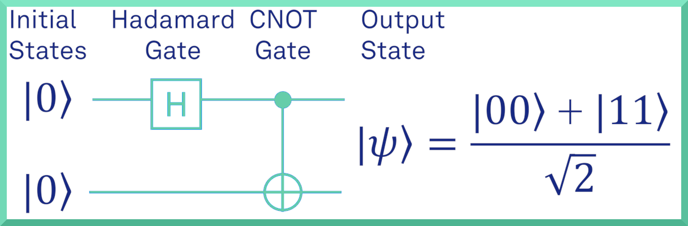
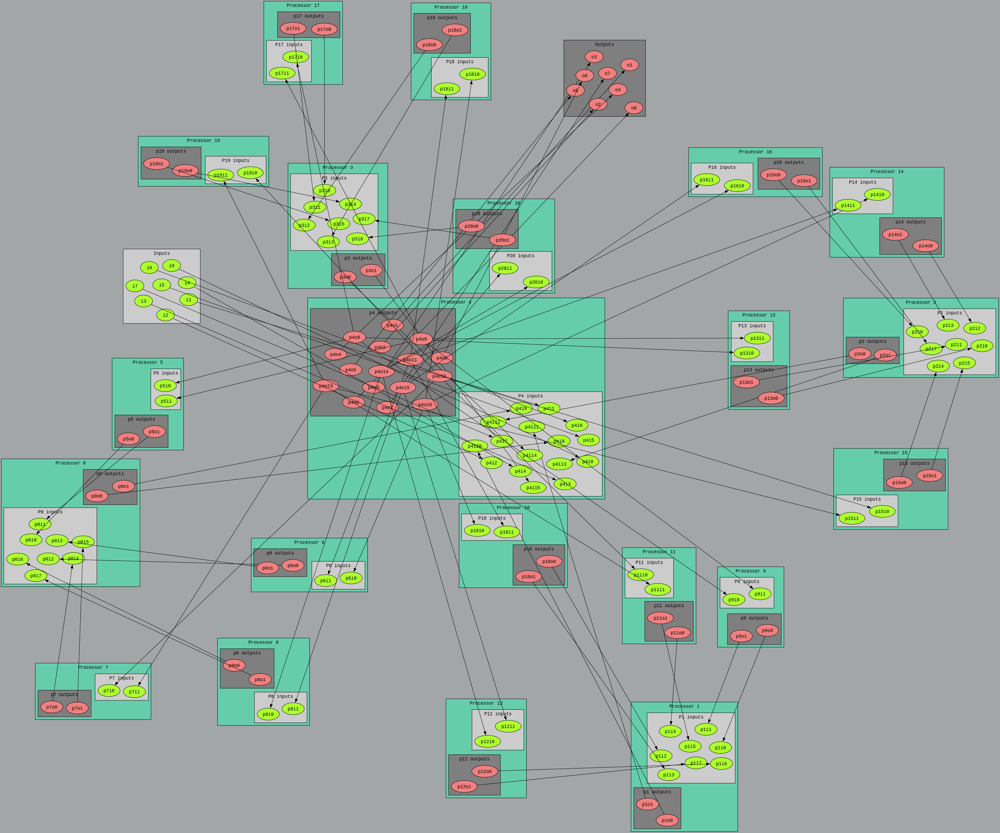

Bell State
-
This example is also available as:
- Working code in the directory zedboard_bellstate within the bmexamples repository
- Quantum simulators comparisons code in the directory bellstate within the bmqsimetests repository
- Tutorial
This example demonstrates how to use the ZedBoard and the BondMachine framework to generate a quantum circuit that prepares a Bell state. The Bell state is a maximally entangled state of two qubits. The circuit is then executed on the ZedBoard and the results are read back and displayed on the host machine.
The circuit of the Bell state is shown below:

The circuit consists of two qubits, q0 and q1. The Hadamard gate is applied to q0, followed by a CNOT gate with q0 as the control and q1 as the target. This translates to the following quantum circuit written in bmq language:
%block code1 .sequential
qbits q0,q1
zero q0,q1
h q0
cx q0,q1
%endblock
%meta bmdef global main:code1It worth noting the file local.mk in this example. This file is used to specify options for the BondMachine framework. In this case, the file specifies the target device as the ZedBoard and the target language as bmq. The file is shown below:
WORKING_DIR=working_dir
CURRENT_DIR=$(shell pwd)
SOURCE_QUANTUM=program.bmq
QUANTUM_APP=working_dir/circuit.c
QUANTUM_ARGS=-build-matrix-seq-hardcoded -hw-flavor seq_hardcoded_complex -app-flavor c_pynqapi_complex -build-app -app-file $(QUANTUM_APP) -emit-bmapi-maps -bmapi-maps-file bmapi.json
BOARD=zedboard
BASM_ARGS=-disable-dynamical-matching -bo $(WORKING_DIR)/bondmachine.bcof -chooser-min-word-size -chooser-force-same-name -dump-requirements $(WORKING_DIR)/requirements.json
MAPFILE=zedboard_maps.json
SHOWARGS=-dot-detail 5
SHOWRENDERER=dot -Txlib
VERILOG_OPTIONS=-comment-verilog -bcof-file $(WORKING_DIR)/bondmachine.bcof
BMREQS=$(WORKING_DIR)/requirements.json
HWOPTIMIZATIONS=onlydestregs,onlysrcregs
include bmapi.mk
include deploy.mkThe project can be verified by running the following command:
make validateif the project is valid, it can be finalized by running the following command:
make applyFrom here, all the make targets can be run. This project make use of the SoC accelerator workflow. You can find more information about this workflow in the documentation about the BondMachine projects. In particular, if you are curious about how the accelerator is built in term of processors and their connections, you can run the following command to show the BM layout:
make show
The following command will execute in sequence all the targets needed to build the accelerator for the ZedBoard:
make design_bitstreamThe generated bitstream can be programmed into the ZedBoard manually or editing the deploy.mk file and running the following command:
make deployThe deploy.mk file is shown below along with the necessary changes
DEPLOY_TYPE=ssh
DEPLOY_HOST=[[YOUR ZEDBOARD IP or HOSTNAME]]
DEPLOY_USER=[[YOUR ZEDBOARD USERNAME]]
DEPLOY_GROUP=[[YOUR ZEDBOARD GROUP]]
DEPLOY_OVERRIDE=true
DEPLOY_PATH=quantum/$(PROJECT_NAME)
DEPLOY_APP=working_dir/circuit.c
SSH_ARGS=-i [[YOUR SSH KEY]]
After the deploy target is executed, a directory named $DEPLOY_PATH will be created in the ZedBoard. The directory will contain the necessary files to run the accelerator: the circuit.c file and bitstream file (that will be called firmware.bit). The application can be built with the following command:
gcc circuit.c -o circuit -l pynq -lcma -lpthreadFor this to be possible, the PYNQ API must be installed in the ZedBoard linux distribution. The application is now ready to be executed. Just run the following command:
./circuit
1.000000 0.000000 0.000000 0.000000 0.000000 0.000000 0.000000 0.000000
0.707107 0.000000 0.000000 0.000000 0.000000 0.000000 0.707107 0.000000The results of the execution will be displayed on the terminal. Executing the circuit without arguments will run the circuit starting from the |00> state. And will display the final state of the vector state.
Alternatively, the circuit can be executed with the following arguments:
./circuit inputs.txt outputs.txtThis will read the initial state of the vectors from the file inputs.txt and write the final state of the vectors to the file outputs.txt.
Both files must contain a sequence of 8 floating point numbers (1 on each line) representing the real and imaginary parts of the vector state.
For example, the file inputs.txt for the |00> state contains the following:
1.000000
0.000000
0.000000
0.000000
0.000000
0.000000
0.000000
0.000000Multiple vectors can be executed in sequence by providing multiple lines in the input file. The output file will contain the final state of each vector in sequence.